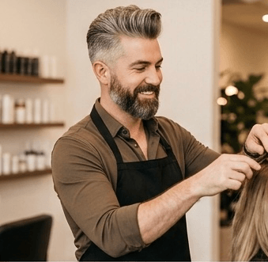

Marcus
Founder & Lead Stylist
With 12 years behind the chair and zero ego, Marcus built Velo Co. on the belief that a great haircut starts with a great conversation. His signature: architectural precision with a lived-in finish. Specializes in bespoke cuts, men's grooming, and the kind of consultation that makes you feel heard before a single snip.
Book with Marcus